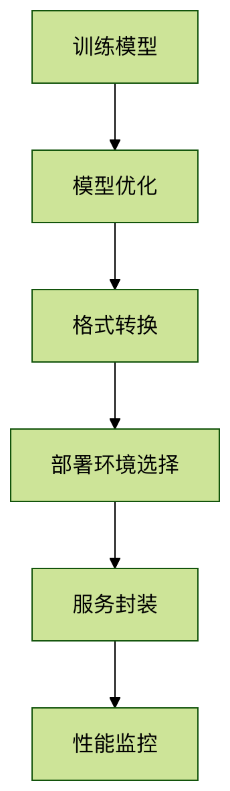

PyTorch モデルデプロイ
モデルデプロイとは、トレーニング済みの機械学習モデルを実際のアプリケーションに投入するプロセスです。PyTorch はこの目標を達成するためのさまざまなツールと方法を提供しています。
モデルデプロイが必要な理由
- アプリケーション統合：AI機能をWeb、モバイル、組み込みシステムに統合する
- パフォーマンス最適化：本番環境向けにモデルの推論速度を最適化する
- リソース管理：計算リソースを有効活用し、高並列サービスを実現する
デプロイフローの概要

モデルの準備と最適化
モデルエクスポート形式
PyTorch は主に以下のエクスポート形式をサポートしています：
| 形式 | 特徴 | 適用シーン |
|---|---|---|
| TorchScript | PyTorchネイティブ形式、動的グラフの特性を保持 | PyTorchエコシステム内部での使用 |
| ONNX | オープン標準、フレームワーク間の互換性 | マルチフレームワーク連携環境 |
| Torch-TensorRT | NVIDIA最適化形式 | GPU推論の高速化 |
TorchScript としてエクスポート
実例
import torch
import torchvision
# 事前学習済みモデルをロード
model = torchvision.models.resnet18(pretrained=True)
model.eval()
# サンプル入力
example_input = torch.rand(1, 3, 224, 224)
# 方法1: トレーシング(tracing)でエクスポート
traced_script = torch.jit.trace(model, example_input)
traced_script.save("resnet18_traced.pt")
# 方法2: スクリプティング(scripting)でエクスポート
scripted_model = torch.jit.script(model)
scripted_model.save("resnet18_scripted.pt")
import torchvision
# 事前学習済みモデルをロード
model = torchvision.models.resnet18(pretrained=True)
model.eval()
# サンプル入力
example_input = torch.rand(1, 3, 224, 224)
# 方法1: トレーシング(tracing)でエクスポート
traced_script = torch.jit.trace(model, example_input)
traced_script.save("resnet18_traced.pt")
# 方法2: スクリプティング(scripting)でエクスポート
scripted_model = torch.jit.script(model)
scripted_model.save("resnet18_scripted.pt")
注意事項：
torch.jit.trace制御フローのないモデルに適しているtorch.jit.script条件分岐などの複雑なロジックを含むモデルを処理できる- エクスポート前に必ず呼び出してください
model.eval()
デプロイ手法の選択
ローカルデプロイ手法
LibTorch (C++ API)
実例
#include <torch/script.h>
int main() {
// モデルをロード
torch::jit::script::Module module;
module = torch::jit::load("resnet18.pt");
// 入力を準備
std::vector<torch::jit::IValue> inputs;
inputs.push_back(torch::ones({1, 3, 224, 224}));
// 推論を実行
auto output = module.forward(inputs).toTensor();
std::cout << output.slice(/*dim=*/1, /*start=*/0, /*end=*/5) << '\n';
}
int main() {
// モデルをロード
torch::jit::script::Module module;
module = torch::jit::load("resnet18.pt");
// 入力を準備
std::vector<torch::jit::IValue> inputs;
inputs.push_back(torch::ones({1, 3, 224, 224}));
// 推論を実行
auto output = module.forward(inputs).toTensor();
std::cout << output.slice(/*dim=*/1, /*start=*/0, /*end=*/5) << '\n';
}
ONNX Runtime
実例
import onnxruntime as ort
# 推論セッションを作成
sess = ort.InferenceSession("model.onnx")
# 入力を準備
input_name = sess.get_inputs()[0].name
input_data = np.random.rand(1, 3, 224, 224).astype(np.float32)
# 推論を実行
outputs = sess.run(None, {input_name: input_data})
# 推論セッションを作成
sess = ort.InferenceSession("model.onnx")
# 入力を準備
input_name = sess.get_inputs()[0].name
input_data = np.random.rand(1, 3, 224, 224).astype(np.float32)
# 推論を実行
outputs = sess.run(None, {input_name: input_data})
クラウドデプロイ手法
TorchServe (公式サービスフレームワーク)
実例
# インストール
pip install torchserve torch-model-archiver
# モデルをパッケージ化
torch-model-archiver --model-name resnet18 \
--version 1.0 \
--serialized-file model.pth \
--extra-files index_to_name.json \
--handler image_classifier \
--export-path model_store
# サービスを起動
torchserve --start --model-store model_store --models resnet18=resnet18.mar
pip install torchserve torch-model-archiver
# モデルをパッケージ化
torch-model-archiver --model-name resnet18 \
--version 1.0 \
--serialized-file model.pth \
--extra-files index_to_name.json \
--handler image_classifier \
--export-path model_store
# サービスを起動
torchserve --start --model-store model_store --models resnet18=resnet18.mar
FastAPI を使用して REST API を構築
実例
from fastapi import FastAPI
from PIL import Image
import io
import torch
app = FastAPI()
model = torch.jit.load("model.pt")
@app.post("/predict")
async def predict(image: UploadFile = File(...)):
img_data = await image.read()
img = Image.open(io.BytesIO(img_data))
# 前処理...
with torch.no_grad():
output = model(img_tensor)
return {"prediction": output.argmax().item()}
from PIL import Image
import io
import torch
app = FastAPI()
model = torch.jit.load("model.pt")
@app.post("/predict")
async def predict(image: UploadFile = File(...)):
img_data = await image.read()
img = Image.open(io.BytesIO(img_data))
# 前処理...
with torch.no_grad():
output = model(img_tensor)
return {"prediction": output.argmax().item()}
パフォーマンス最適化のヒント
量子化による高速化
実例
# 動的量子化
quantized_model = torch.quantization.quantize_dynamic(
model, {torch.nn.Linear}, dtype=torch.qint8)
# 静的量子化
model.qconfig = torch.quantization.get_default_qconfig('fbgemm')
torch.quantization.prepare(model, inplace=True)
# キャリブレーション...
torch.quantization.convert(model, inplace=True)
quantized_model = torch.quantization.quantize_dynamic(
model, {torch.nn.Linear}, dtype=torch.qint8)
# 静的量子化
model.qconfig = torch.quantization.get_default_qconfig('fbgemm')
torch.quantization.prepare(model, inplace=True)
# キャリブレーション...
torch.quantization.convert(model, inplace=True)
TensorRT を使用した高速化
実例
import torch_tensorrt
# コンパイル最適化
trt_model = torch_tensorrt.compile(model,
inputs=[torch_tensorrt.Input((1, 3, 224, 224))],
enabled_precisions={torch.float32} # または {torch.float16}
)
# 最適化済みモデルを保存
torch.jit.save(trt_model, "model_trt.pt")
# コンパイル最適化
trt_model = torch_tensorrt.compile(model,
inputs=[torch_tensorrt.Input((1, 3, 224, 224))],
enabled_precisions={torch.float32} # または {torch.float16}
)
# 最適化済みモデルを保存
torch.jit.save(trt_model, "model_trt.pt")
よくある質問（FAQ）
Q1: デプロイ時にバージョン互換性の問題が発生した場合はどうすればよいですか？A: Dockerコンテナを使用して環境バージョンを固定するか、conda専用環境を作成することをお勧めします。
Q2: デプロイしたモデルのパフォーマンスを監視するにはどうすればよいですか？A: Prometheus などの監視ツールを統合して、レイテンシ、スループット、リソース使用状況を追跡できます。
Q3: モデルデプロイ後にホットアップデートを実現するにはどうすればよいですか？A: TorchServe はモデルバージョン管理とA/Bテストをサポートしており、APIを通じてモデルバージョンを動的に切り替えることができます。
その他の拡張
クリックしてノートを共有
ノートは本記事の内容を拡張したものである必要があります！
記事の投稿は、ここをクリックしてください
登録招待コードの取得方法
ノートを共有する前に必ずログインする必要があります！
登録招待コードの取得方法